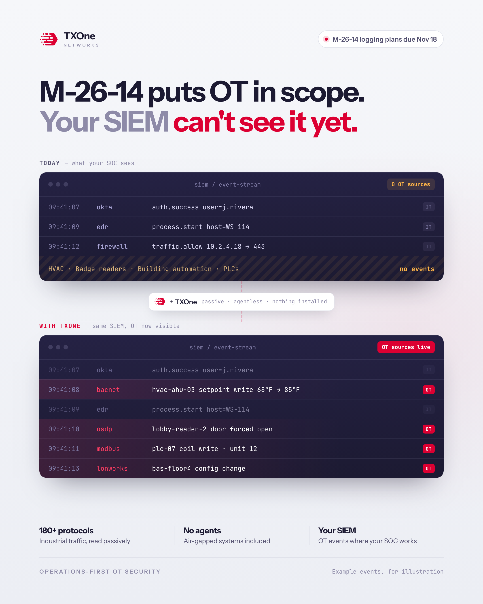

One message: M-26-14 puts OT in the logging scope, most SOCs can't see OT today, and TXOne makes it visible in the SIEM they already use, without touching operations.

States the whole problem in one breath: M-26-14 makes OT part of the logging plan, but the SIEM can't see it yet. Crimson marks the gap TXOne closes.
A realistic SIEM event feed. Only IT shows up: logins, endpoint activity, firewall traffic. This is where most agency plans stop.
Nothing gets replaced. The SOC keeps its tools; IT events dim into the background and OT events now sit right next to them.
Why it's safe for operations: 180+ industrial protocols read passively, no agents to install, works on air-gapped systems.
TXOne logo top left. The pill on the right reminds federal readers that Agency Logging Plans are due Nov 18.
HVAC, badge readers, building automation and PLCs send no events. Under M-26-14 the maturity score is the lowest element, so this gap caps the whole agency.
TXOne listens to OT traffic passively. Nothing installed on fragile devices, no risky scans, no downtime.
The crimson rows are OT events the SOC could never see before: an HVAC setpoint change, a door forced open, a write to a PLC, a building config change.